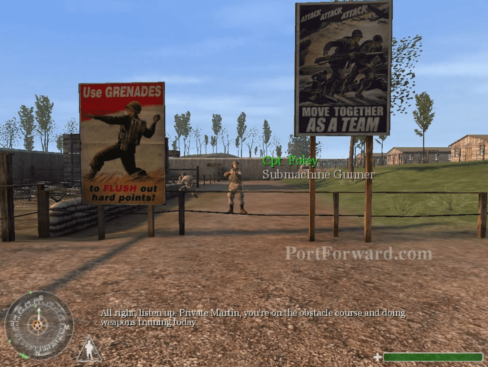
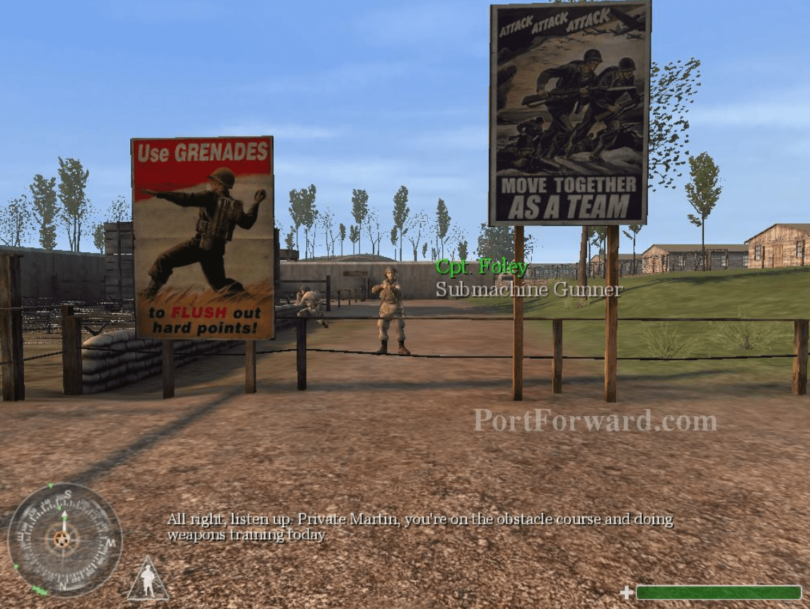

Call of Duty (2015)
Life Is Strange es un juego de aventuras episódico desarrollado por Dontnod Entertainment y publicado por Enix para PlayStation 3, PlayStation 4, Windows, Xbox 360 y Xbox One. La trama se centra en Max Caulfield, una estudiante de fotografía de 18 años que descubre que tiene la habilidad de rebobinar el tiempo en cualquier momento, lo que lleva a que cada una de sus elecciones provoque el efecto mariposa. Las acciones del jugador ajustan la narrativa mientras se desarrolla, y la remodelan una vez que se le permite viajar en el tiempo. Las misiones de búsqueda y los cambios ambientales representan las formas de resolver rompecabezas además de usar opciones ramificadas para la conversación.